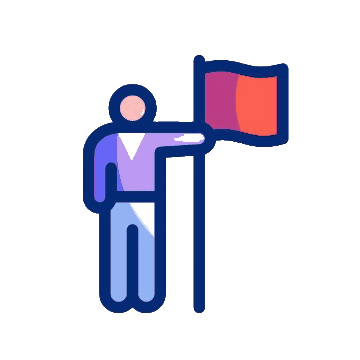

Mengenal 5S, 4S & MY4S

Pengenalan 5S
Video 1 [Ice Breaking – Attitude Skill Knowledge]
Sisih
Seiri
Sort
S1 - Sisih (Seiri - Sort)
Asing & buang barang-barang yang tidak diperlukan atau simpan sementara
Susun
Seiton
Straighten
S2 - Susun (Seiton - Straighten)
Pastikan barang keperluan sentiasa berada dalam keadaan yang mudah dan cepat untuk diambil.
Suci
Seiso
Shine
S3 - Suci (Seiso - Shine)
Pembersihan rapi, tidak ada kekotoran atau sampah disemua kawasan & tempat
Seragam
Seiketsu
Standardize
S4 - Seragam (Seiketsu - Standardize)
Kekalkan SISIH, SUSUN & SUCI, memelihara serta mengekalkan taraf penjagaan kebersihan & penyusunan tempat kerja yang teratur.
Sentiasa Amal
Shitsuke
Sustain
S5 - Sentiasa Amal (Shitsuke - Sustain)
Jadikan ia sebagai amalan dan budaya kerja dalam organisasi.
Pengertian Elemen 5S
Amalan Kebersihan & Keselamatan ditempat kerja
Amalan Kebersihan (Kekemasan)
Abnormaliti dapat dikesan
Tindakan dapat diambil dengan segera
Jalan penyelesaian dapat dibuat bersama-sama
Bagi menjamin pengeluaran beroperasi dengan lancar & menghasilkan produk berkualiti tinggi
Amalan 4S dapat Mewujudkan:
- Amalan Kebersihan
- Disiplin Diri
- Kerjasama Berkumpulan
- Komunikasi (TM & Atasan)
- Human Development (OJT)
- Melatih semua pekerja boleh melakukan "Kaizen"
Kepentingan 5S
Apakah faedah mengekalkannya?
Untuk memastikan kawasan kerja BERSIH dan KEMAS.
Untuk memastikan hasil kerja pengeluaran berkualiti.
Memudahkan kerja dan persekitaran selamat.
Memastikan proses kerja berjalan dengan lancar.
Menjamin produktiviti dan pengeluaran.
Meningkatkan moral pekerja.


Konsep 5S [Amalan di tempat kerja]

Satu konsep KEBERSIHAN dan KESELAMATAN [Kekemasan yang rapi]
PELAKSANAAN dan PENGEKALAN di tempat kerja bermula dengan diri sendiri.
Objektif MY4S
Mewujudkan keadaan dimana abnormaliti boleh dikesan dengan cepat.
Mengambil tindakan dengan segera sekiranya ada berlaku abnormal.
Menjadikan persekitaran kawasan kerja yang bersih, selesa dan selamat.
Kerja harian dapat dijalankan dengan lancar.
Definisi 5S

Matlamat (MISI) 5S 
Mengekalkan keadaan NORMAL (Standard) dan KESERAGAMAN di kawasan tempat kerja, dari aspek KEBERSIHAN dan KESELAMATAN.
Bagi ABNORMAL, tindakan cepat dapat dilakukan dengan segera.
Melatih semua pekerja supaya MENGEKALKAN tindakan secara BERTERUSAN
Definisi 5S - Sisih


Arah Tuju & Sasaran

Definisi 5S - Susun


Arah Tuju & Sasaran

Definisi 5S - Suci

Arah Tuju & Sasaran

Definisi 5S - Seragam
Pengekalan – Sisih / Susun / Suci
Peraturan yang jelas dan terperinci
- Tetapkan perkara yang mesti dipatuhi
- Patuh pada perkara dan masa yang ditetapkan
Fungsi check
- Adakah telah menjadi amalan
- Genba patrol (OJT untuk semua manpower baru / lama)

Arah Tuju & Sasaran

Peraturan yang jelas dan terperinci
- Tetapkan perkara yang mesti dipatuhi
- Patuh pada perkara dan masa yang ditetapkan
Fungsi check
- Adakah telah menjadi amalan
- Genba patrol (OJT untuk semua manpower baru / lama)
Arah Tuju & Sasaran
Siapa yang Terlibat?